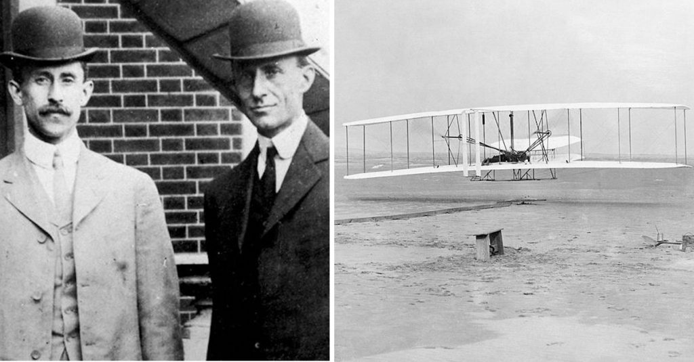

Aerodynamics is the branch of fluid dynamics concerned with the study of the motion of air, particularly when it interacts with a solid object, such as an airplane wing. This chapter introduces the fundamental concepts of aerodynamics and its historical significance, demonstrating its importance through various applications.
The study of aerodynamics has been pivotal in the progress of multiple fields, especially aviation. The study of fluid mechanics, which is fundamental to aerodynamics, began with the work of pioneers like Isaac Newton and was further developed by Jean LeRond d'Alembert and Leonhard Euler. Their contributions laid the foundation for modern aerodynamic principles.
One of the most notable milestones in the history of aerodynamics was the first successful powered flight by the Wright brothers in 1903. Their experiments and innovations marked the beginning of modern aeronautical engineering. The Wright brothers’ meticulous approach to understanding and applying aerodynamic principles was instrumental in their success. They conducted extensive wind tunnel tests and refined their designs based on empirical data. Their work led to the development of more efficient airfoil shapes and control mechanisms, which are still fundamental in modern aircraft design.
Source: Do You Remember, 2023. Available at: https://doyouremember.com/81087/rare-footage-of-wright-brothers-first-flight [Accessed 11 July 2024].
High-speed, supersonic flight had become a dominant feature of aerodynamics by the end of World War II. Aerodynamicists appreciated the advantages of using slender, pointed body shapes to reduce the drag of supersonic vehicles. The German V-2 rocket, used during the last stages of World War II, had a pointed nose, and all short-range rocket vehicles flown during the next decade followed suit. In 1953, the first hydrogen bomb was exploded by the United States, which spurred the development of long-range intercontinental ballistic missiles (ICBMs) designed to reenter the atmosphere at high velocities.
However, a significant breakthrough came in 1951 with the introduction of the blunt reentry body concept by H. Julian Allen at the NACA (National Advisory Committee for Aeronautics) Ames Aeronautical Laboratory. Allen's insight was that a blunt body would dissipate reentry energy into the surrounding air, reducing the heat transferred to the vehicle itself. This was a revolutionary concept that led to the successful design of reentry vehicles for missiles and space capsules.
The modern science of aerodynamics rests on a strong fundamental foundation, a large percentage of which was established by Ludwig Prandtl at the University of Göttingen. Prandtl's contributions to aerodynamics and fluid mechanics are considered foundational. His work on the boundary-layer concept, thin airfoil theory, and finite-wing theory has had a profound impact on the field. Prandtl’s ability to go intuitively to the heart of physical problems and his groundbreaking research in various aspects of fluid dynamics solidified his status as a central figure in the development of modern aerodynamics.
The swept-wing concept, initially introduced by Adolf Busemann in 1935, revolutionized high-speed aircraft design. The German Luftwaffe recognized its military significance, and extensive research was conducted in secrecy during World War II. This concept increased the critical Mach number for aircraft, allowing for higher subsonic and transonic speeds. Post-war, this knowledge significantly influenced aircraft design globally, with Robert T. Jones of NACA independently rediscovering the advantages of swept wings.
Daniel Bernoulli's principle is a fundamental concept in fluid dynamics that explains how the pressure of a fluid decreases as its velocity increases. This principle is crucial in understanding how airfoils generate lift. Bernoulli's equation, derived from the conservation of energy, is used to relate the pressure and velocity of a fluid at different points in a streamline.
Isaac Newton's three laws of motion provide a framework for understanding the forces acting on an aircraft. Newton's first law (the law of inertia) explains how an object will remain at rest or in uniform motion unless acted upon by an external force. Newton's second law relates the force applied to an object to its mass and acceleration (F=ma). Newton's third law states that for every action, there is an equal and opposite reaction. These laws are essential for understanding the behavior of aircraft in flight.
Fluid dynamics is the study of fluids (liquids and gases) in motion. The behavior of fluids is governed by the principles of conservation of mass, momentum, and energy. These principles are expressed mathematically by the continuity equation, Navier-Stokes equations, and the energy equation.
The continuity equation represents the conservation of mass in a fluid flow. It states that the mass flow rate of a fluid must remain constant from one cross-section to another. In mathematical terms, for an incompressible fluid, it can be written as:
A1 * V1 = A2 * V2
where A is the cross-sectional area, and V is the fluid velocity at that cross-section.
The Navier-Stokes equations describe the motion of fluid substances. These equations account for the forces acting on a fluid, including pressure, viscous, and external forces. They are fundamental in predicting how fluids flow and are used extensively in aerodynamics to model airflow over aircraft surfaces.
An airfoil is a shape designed to generate lift when air flows over it. The design of an airfoil is critical in determining the aerodynamic performance of an aircraft. Key parameters in airfoil design include the camber (curvature), thickness, and the angle of attack.
The camber of an airfoil is the curvature of its mean line. A positively cambered airfoil has more curvature on the top surface than the bottom, which helps in generating lift. The camber affects the lift and drag characteristics of the airfoil.
The thickness of an airfoil is the distance between the upper and lower surfaces. Thicker airfoils can generate more lift but also produce more drag. The thickness distribution along the chord of the airfoil affects its aerodynamic performance.
The angle of attack is the angle between the chord line of the airfoil and the direction of the oncoming airflow. Increasing the angle of attack generally increases the lift generated by the airfoil, but beyond a certain point, it can lead to flow separation and stall, drastically reducing lift.
Supersonic flows occur when the flow velocity exceeds the speed of sound. In such flows, shock waves form, leading to drastic changes in pressure, temperature, and density. Hypersonic flows are characterized by extremely high velocities, typically greater than Mach 5, where additional physical phenomena such as dissociation and ionization of air molecules become significant.
Shock waves are abrupt, nearly discontinuous changes in pressure, temperature, and density in a fluid. They occur when an object moves faster than the speed of sound in the fluid, causing the fluid particles to be compressed. Shock waves can be normal (perpendicular to the flow direction) or oblique (at an angle to the flow direction). Understanding shock wave behavior is crucial for designing supersonic and hypersonic vehicles.
The boundary layer is a thin region of fluid flow adjacent to a solid surface where viscous effects are significant. The concept was introduced by Ludwig Prandtl and is essential for understanding drag and heat transfer on an object. The boundary layer can be laminar or turbulent, with turbulent boundary layers having higher friction drag but better mixing properties.
Flow separation occurs when the boundary layer detaches from the surface of an object. This can lead to a significant increase in drag and a loss of lift. Techniques to control flow separation include the use of vortex generators, boundary layer suction, and active flow control methods such as synthetic jets.
Computational Fluid Dynamics (CFD) is a branch of fluid mechanics that uses numerical analysis and algorithms to solve and analyze problems involving fluid flows. CFD is widely used in aerodynamics to simulate airflow over aircraft surfaces, allowing engineers to predict performance and optimize designs before physical testing.
CFD involves the discretization of the fluid domain into small control volumes or elements and solving the governing equations of fluid flow (continuity, momentum, and energy equations) iteratively. Techniques include finite difference methods, finite volume methods, and finite element methods.
CFD is used in various applications, including aerodynamic design and optimization, heat transfer analysis, and studying complex phenomena such as turbulence and combustion. It allows for detailed visualization of flow fields, providing insights that are difficult to obtain through experimental methods alone.
Turbulence is a complex and chaotic state of fluid flow characterized by rapid fluctuations in velocity and pressure. It is a common phenomenon in aerodynamics and plays a significant role in determining the aerodynamic performance of vehicles.
Laminar Flow: In laminar flow, fluid particles move in smooth, parallel layers with minimal mixing. Laminar flow typically occurs at lower Reynolds numbers and is associated with lower skin friction drag. Turbulent Flow: Turbulent flow is characterized by chaotic and irregular fluid motion, with significant mixing between fluid layers. It occurs at higher Reynolds numbers and results in higher skin friction drag but better mixing and heat transfer properties. Transition Point: The transition from laminar to turbulent flow occurs at a specific point along the surface of an object, known as the transition point. This point depends on various factors, including surface roughness, pressure gradients, and flow velocity.
The Reynolds number (Re) is a dimensionless quantity that helps predict the flow regime (laminar or turbulent) in fluid dynamics. It is defined as: \[ \text{Re} = \frac{\rho V L}{\mu} \] where:
Increased Drag: Turbulent flow increases skin friction drag on the surface of an object, leading to higher overall drag forces. Enhanced Mixing: Turbulent flow enhances the mixing of fluid layers, improving heat transfer and preventing boundary layer separation in some cases. Noise and Vibration: Turbulence can generate noise and vibrations, affecting the comfort and structural integrity of vehicles.
Boundary layer control involves techniques to manipulate the behavior of the boundary layer to reduce drag, delay flow separation, and improve overall aerodynamic performance.
Suction and Blowing: Suction involves removing low-energy fluid from the boundary layer, while blowing adds high-energy fluid. These techniques can delay flow separation and reduce drag. Vortex Generators: Vortex generators are small devices attached to the surface of an object to generate controlled vortices. These vortices energize the boundary layer, delaying separation and reducing drag. Surface Roughness: Strategically placed surface roughness elements can trip the boundary layer from laminar to turbulent flow, delaying separation and reducing drag in some cases. Active Flow Control: Active flow control techniques use actuators and sensors to manipulate the boundary layer dynamically. Examples include synthetic jets and plasma actuators.
Aeroelasticity is the study of the interaction between aerodynamic forces and structural deformations. It is crucial in the design of flexible structures such as aircraft wings, wind turbine blades, and bridges.
Flutter: Flutter is a dynamic instability that occurs when aerodynamic forces couple with the natural vibration modes of a structure. It can lead to catastrophic failure if not controlled. Designers use techniques like mass balancing and stiffness tailoring to prevent flutter. Divergence: Divergence is a static instability that occurs when aerodynamic forces cause a structure to deform progressively, leading to a loss of control. Ensuring adequate structural stiffness is essential to prevent divergence. Control Reversal: Control reversal occurs when aerodynamic forces acting on a control surface (e.g., aileron) become strong enough to reverse the intended control input. Designers must consider control surface placement and hinge moments to avoid control reversal.
Hypersonic aerodynamics deals with the behavior of airflows at speeds greater than five times the speed of sound (Mach 5). It involves unique challenges due to high temperatures, shock waves, and complex flow phenomena.
High Temperatures: Hypersonic flows generate extremely high temperatures due to compression and shock waves. Thermal protection systems are essential to prevent structural damage. Shock Layer: A shock layer forms around hypersonic vehicles, causing significant changes in pressure, temperature, and density. Understanding shock layer behavior is crucial for vehicle design. Real Gas Effects: At hypersonic speeds, air can no longer be considered an ideal gas. Real gas effects, such as dissociation and ionization, must be accounted for in analysis and design. Aerodynamic Heating: Hypersonic vehicles experience intense aerodynamic heating, necessitating advanced thermal protection materials and cooling systems.
Wind tunnel testing is a critical experimental method used to study aerodynamic behavior and validate computational models. It involves placing a scale model of a vehicle or structure in a controlled airflow and measuring various aerodynamic parameters.
Subsonic Wind Tunnels: Used for testing at speeds below the speed of sound. They are suitable for studying low-speed aerodynamics, such as automotive and architectural applications. Supersonic Wind Tunnels: Capable of testing at speeds above the speed of sound. They are used for studying high-speed aerodynamics, such as aircraft and missile designs. Hypersonic Wind Tunnels: Designed for testing at hypersonic speeds (Mach 5 and above). They are used for studying hypersonic vehicle behavior and thermal protection systems.
Force and Moment Measurements: Load cells and balances measure forces and moments acting on the model, providing data on lift, drag, and pitching moments. Pressure Measurements: Pressure taps and transducers measure surface pressures, allowing for the determination of pressure distributions and aerodynamic coefficients. Flow Visualization: Techniques such as smoke, tufts, and oil flow visualization help visualize airflow patterns and identify flow separation, vortices, and shock waves. Temperature Measurements: Thermocouples and infrared cameras measure surface temperatures, providing insights into aerodynamic heating and thermal protection effectiveness.
The lift-to-drag ratio (L/D) is a measure of the efficiency of an airfoil or an aircraft. A higher L/D ratio indicates a more aerodynamically efficient design.
The L/D ratio is given by: \[ \frac{L}{D} = \frac{\text{Lift}}{\text{Drag}} \] Maximizing the L/D ratio is crucial for improving fuel efficiency and performance in aviation.
Normal Shock Waves: Occur when the airflow is perpendicular to the shock wave. They cause an abrupt increase in pressure, temperature, and density, resulting in a loss of total pressure.
Oblique Shock Waves: Occur at an angle to the airflow. They cause changes in flow direction and are typically less intense than normal shock waves.
Wave drag is a type of aerodynamic drag associated with supersonic flight. It results from the formation of shock waves and is influenced by the shape and configuration of the aircraft.
Techniques to reduce wave drag include area ruling (designing the aircraft to have a smooth cross-sectional area distribution) and using swept wings.
Supersonic flight generates significant aerodynamic heating due to shock waves and friction. Thermal protection systems are necessary to prevent structural damage.
High-lift devices are typically deployed during takeoff and landing to increase lift and allow for lower approach speeds. During cruise flight, these devices are retracted to minimize drag.
Laminar flow control aims to maintain laminar flow over a larger portion of the wing surface to reduce drag. Techniques include surface suction, boundary layer heating, and hybrid laminar flow control systems.
Active flow control involves using actuators, sensors, and feedback systems to manipulate the airflow dynamically. Examples include synthetic jets, plasma actuators, and morphing surfaces.
Morphing wings can change their shape in flight to optimize aerodynamic performance under different conditions. This technology can improve fuel efficiency, reduce noise, and enhance maneuverability.
Bio-inspired aerodynamics takes inspiration from nature to develop innovative designs and technologies. Examples include winglets inspired by bird wings and surface textures inspired by shark skin.
Distributed propulsion involves using multiple smaller engines distributed along the wings or fuselage, rather than a few large engines. This approach can improve aerodynamic efficiency, reduce noise, and enhance performance.
Aerodynamics is a complex and multidisciplinary field that plays a crucial role in the design and performance of vehicles and structures. Understanding the principles of aerodynamics, from basic concepts to advanced techniques, is essential for engineers and scientists working in aviation, automotive, and other industries. Continuous research and innovation in aerodynamics lead to more efficient, safer, and environmentally friendly technologies.
This concludes Chapter 1 on Aerodynamics. In subsequent chapters, we will delve deeper into specific aerodynamic topics and their applications in various fields.